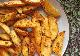
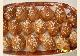

Seçiniz
Ana Sayfa
Ürünler
Püf Noktalar
Ýletiþim
ANA SAYFA
ÜRÜNLER
PÜF NOKTALAR
ÝLETÝÞÝM
SÝZÝN ÝÇÝN SEÇTÝKLERÝMÝZ

Fırında elma dilim patates
Soslu, Baharatlı Köfte

Kolay Poğaça
Dondurmalı Un Helvası
EN FAZLA TAKÝP EDÝLEN YEMEK TARÝFLERÝ
KAVRULMUÞ ENGÝNARLI TAVUK
ERÝÞTELÝ PATLÝCANLI FIRIN MAKARNA
ORMAN KEBABI
ISPANAKLI KÖFTE
FIRINDA SEBZELÝ KÖFTE
DEREOTLU VE ENGÝNARLI PERDE PÝLAVI